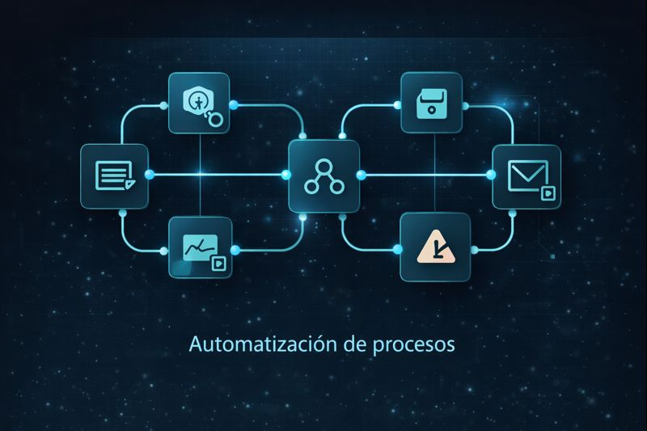

What we do
Two service lines, one standard: clarity, control and measurable outcomes.
Automation RF01–RF04
Operational control with evidence
Monitoring, preventive alerts, historical evidence and KPIs for critical processes.
Web Development
Websites that convert and connect to your operation
Clear messaging, speed, technical SEO and automation integration for lead routing and measurement.
Who it’s for
Teams that need real control: management, operations, sales and IT.
Management
Evidence-based decisions
KPIs and traceability to prioritize actions.
Operations
Less firefighting
Early detection and noise-free alerts.
Sales
SLA monitoring
Visible risk states and process control.
IT
Maintainable architecture
Clean integrations, DB logs and scalability.

How we work
A clear process to build, measure and improve—no improvisation.
1
Discovery
Goals, data sources, risks and KPIs.
2
Design
Architecture, rules, evidence and dedupe.
3
Build
n8n + DB + alerts + controlled testing.
4
Measure
KPIs, tuning and continuous improvement.